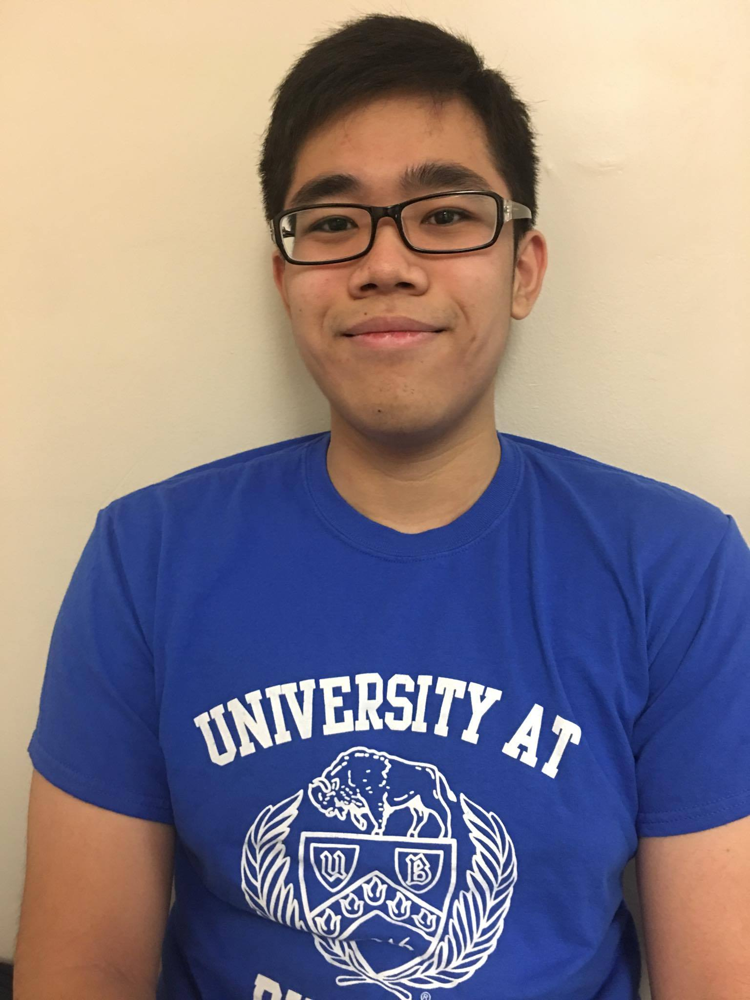
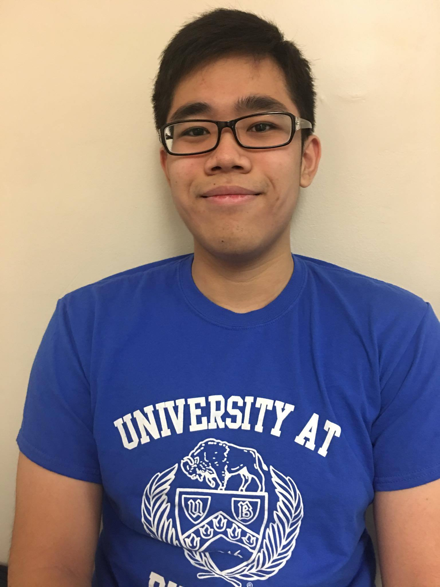

Hi, My name Yuewen Huang and I'm am currently attending University at Buffalo in purse of a accounting degree. I graduated from Brooklyn Technical High School in June 2016. I was born in China and came to America when I was two years old. My birthday is October 13, 1998 and is currently 18 years old. My hobbies include playing handball, playing games and reading.
Goals for College
I am current majoring in accounting at University at Buffalo. I plan on completing my bachelor's degree in four years then move on to completing my master's degree. I will complete my master's degree on either account , business or maybe finance.
THINGS I LIKE ABOUT THE CSE 199 CLASS
The CSE 199 class is unique class in many different aspects. The main aspect is probably how the class is taught and how the students learn. This class does not have the traditional professor teaching everything course but has videos as well as hands on activities to help students learn about the internet. This is my first time taking a course in this fashion and I have to say I was more motivated for the class then I previous did for any of my other classes. This way of teaching is new and maybe in the experimental phase but it does seem a lot more interesting than the traditional classroom
THINGS THE CSE 199 CAN IMPROVE ON
The class in my opinion is successful but can be improved in some ways. Some ways I think this class can improve is having less videos to watch on a various subjects but have longer videos. I feel a short 3-5 minute on a video does not really cover the topic enough and people that are really into the topic would generally be disappointed. In my opinion there should probably be around 10 - 15 videos a week but have them about 10- 15 minute long. The topics we cover should also be decided by the class as topics that students want to learn generally make them more motivated to learn the topic and do the activities
 
